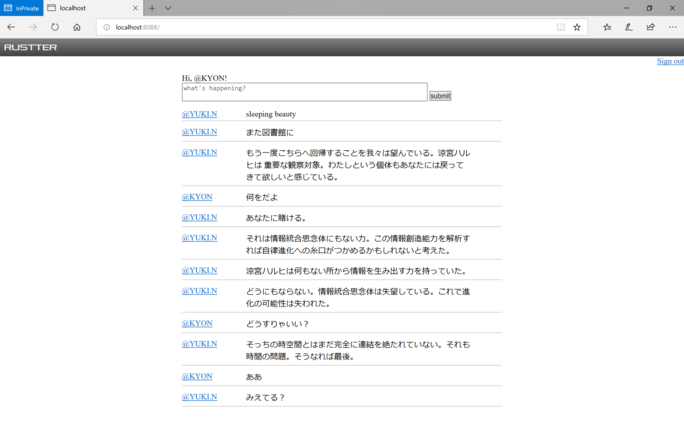
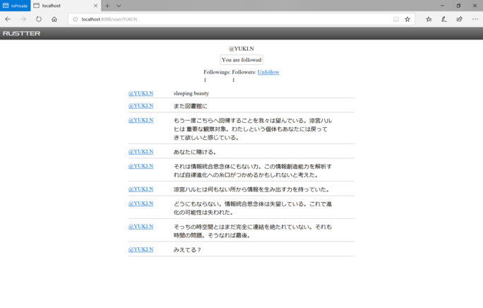

Rust の所感，あるいは Rustter のこと
https://bydriv.github.io/blog/rustter.html
created at
updated at
この土日を使って Rustter という Rust で書かれた Twitter クローン（？）を開発していた． リポジトリを独立させるつもりはいまのところなくて， ソースコードは https://github.com/bydriv/bydriv.github.io/tree/master/rustter にある．
スクリーンショット．
ホームタイムライン:

ユーザページ:

なんでつくってたのか． Rust の勉強とか予習（？）のため． 某社がサーバサイドを Rust でやってるらしいので， 所感を掴むためというのもある． それとはべつに， 個人的にも Rust をちゃんと書いてみるいい機会だったと思う．
技術的詳細．
- actix: Actor ライブラリ（？）らしい．よくわかっていない．
- actix-web: Actix で実装されたサーバサイドのフレームワーク．
- diesel: Rust の ORM で SQL を操作するのに使う． migration もある．
- dotenv:
.envというファイルを読みこむために使うらしい - siphasher: djb 御大の SipHash の実装．
- serde: なんかシリアライズとかするライブラリ．
- serde_json: json 用の serde ．
- serde_derive: シリアライズとかするのを
#[derive()]とかできるようになる． - actix-redis: Actix において Redis でセッション管理をするやつ．
- askama: テンプレートエンジン．
- r2d2: SQL のコネクションプールを管理してくれる．
所感．
- Rust という言語で詰まることはあんまなかった． 気がする．
- コンパイルはなかなか通らないけど通ってから落ちたことはない(といってもまだ2日しか使ってないのだけど)． これはすごいことだと思う．そのへんの書き味は Haskell みたいにかなり高級言語な感じ． にもかかわらず GC もないのだからすごい．
- わたしの場合，数年前に Rust のチュートリアルを流し読みしていたからその知識で多少書けたけど， 完全に初見だったらつらかったかもしれない．
そんな感じ．